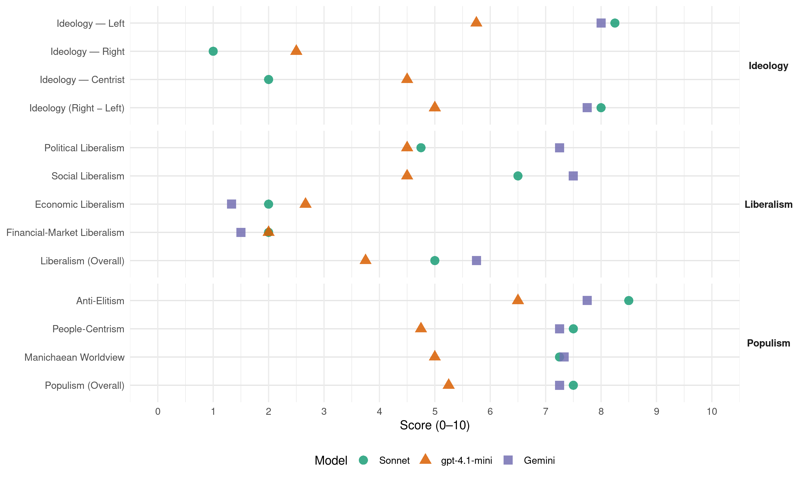

FAD (Panama, 2014)
manifesto_id 160221_201405
Get full text: This site shows derived annotations and short verbatim quotes only. The full manifesto text is © Manifesto Project / WZB — obtain it via manifesto-project.wzb.eu using the manifesto_id above.
Headline scores
| Dimension | Sonnet | gpt-4.1-mini | Gemini |
|---|---|---|---|
| Populism (Overall) | 7.5 | 5.2 | 7.2 |
| Anti-Elitism | 8.5 | 6.5 | 7.8 |
| People-Centrism | 7.5 | 4.8 | 7.2 |
| Manichaean Worldview | 7.2 | 5.0 | 7.3 |
| Ideology (Right − Left) | 8.0 | 5.0 | 7.8 |
| Liberalism (Overall) | 5.0 | 3.8 | 5.8 |
| Political Liberalism | 4.8 | 4.5 | 7.2 |
| Social Liberalism | 6.5 | 4.5 | 7.5 |
| Economic Liberalism | 2.0 | 2.7 | 1.3 |
| Financial-Market Liberalism | 2.0 | 2.0 | 1.5 |
Evidence per dimension
Economic Liberalism
Gemini · score 1.0 · verified · chunk 1
“el libre juego de la oferta y la demanda como se ha propagandizado, claramente que beneficia a los que más tienen”
El “libre juego de la oferta y la demanda” como se ha propagandizado, claramente que beneficia a los que más tienen y perjudica a los que menos
Gemini · score 1.0 · verified · chunk 2
“renacionalización de las empresas privatizadas”
Nombrar una Comisión de Expertos para la renacionalización de las empresas privatizadas.
Gemini · score 2.0 · verified · chunk 3
“Estado participativo y regulador de la actividad económica”
Reformar el Estado para la construcción de una sociedad justa, equitativa, democrática y participativa. Un Estado participativo y regulador de la actividad económica, tendiente al bien
gpt-4.1-mini · score 3.0 · verified · chunk 1
“la participación del estado como regulador de la actividad económica es esencial”
En nuestro programa, la participación del estado como regulador de la actividad económica es esencial. Nuestra propuesta es anti-neoliberal.
gpt-4.1-mini · score 3.0 · verified · chunk 2
“liberalismo, que prioriza la vida por encima de cualquier cosa”
Las políticas en esta materia se tienen que inscribir en el cambio estructural del modelo económico, un modelo contrario al neoliberalismo, que prioriza la vida por encima de cualquier cosa, que tiene como su principal prioridad, saldar la deuda social con el pueblo panameño.
gpt-4.1-mini · score 2.0 · verified · chunk 3
“la concentración de la riqueza en los sectores y fracciones del poder económico”
…Existe una grave y creciente brecha entre las necesidades básicas de vida… El hambre, la desnutrición y las enfermedades son la consecuencia lógica pero injusta e inhumana de la violación del derecho al trabajo… la concentración de la riqueza en los sectores y fracciones del poder económico…
Sonnet · score 2.0 · verified · chunk 1
“la participación del estado como regulador de la actividad económica es esencial”
En nuestro programa, la participación del estado como regulador de la actividad económica es esencial. Nuestra propuesta es anti-neoliberal.
Sonnet · score 2.0 · verified · chunk 2
“la libertad de mercado y la desregulación de la economía”
el aumento vertiginoso de las emisiones de CO2 coinciden con la ejecución acelerada del modelo neoliberal, las privatizaciones, la libertad de mercado y la desregulación de la economía.
Sonnet · score 2.0 · verified · chunk 3
“Estado participativo y regulador de la actividad económica”
Aprobar la normativa legal que se requiera para hacer un Estado participativo y regulador de la actividad económica, optando por la planificación como instrumento esencial
Financial-Market Liberalism
Gemini · score 1.0 · verified · chunk 1
“bajas tasas de interés de los préstamos”
Se incentivará la producción agropecuaria y de alimentos (bajas tasas de interés de los préstamos, asesoría técnica
Gemini · score 2.0 · verified · chunk 2
“programa de micro-finanzas con recursos”
Crear, normar y activar programa de micro-finanzas con recursos nacionales y de la banca para la activación
gpt-4.1-mini · score 2.0 · verified · chunk 1
“la inversión extranjera no ha sido tan beneficiosa como se nos dice, como tampoco la venta de las empresas estatales rentables al capital extranjero”
En los últimos 13 años han salido del país unos 20,000 millones de balboas, debido a la inversión extranjera y al endeudamiento exterior. La inversión extranjera no ha sido tan beneficiosa como se nos dice, como tampoco la venta de las empresas estatales rentables al capital extranjero.
gpt-4.1-mini · score 2.0 · verified · chunk 2
“La privatización del sector eléctrico también implicó otros problemas”
La privatización del sector eléctrico también implicó otros problemas. Se ha debilitado la institucionalidad gubernamental, capaz de tener incidencia. Aún cuando el estado tiene el 100% de la Empresa de Transmisión Eléctrica (ETESA) y el 49% de las empresas distribuidoras, el Contrato firmado por el gobierno del PRD de Pérez Balladares, le concedió la administración y toma de decisiones a las empresas transnacionales.
Sonnet · score 2.0 · verified · chunk 1
“Los grandes capitales de bancos, aseguradoras, Zona Libre de Colón”
Los grandes capitales de bancos, aseguradoras, Zona Libre de Colón (ZLC) y otros, deben ser los que aporten más al fisco. Se deben gravar las operaciones exteriores
Sonnet · score 2.0 · verified · chunk 2
“renacionalización de las empresas privatizadas”
Se debe fortalecer la institucionalidad del estado, para lo cual, también hay que revisar y modificar la Ley y los Contratos relacionados con la privatización. Nombrar una Comisión de Expertos para la renacionalización de las empresas privatizadas.
Sonnet · score 2.0 · verified · chunk 3
“supeditarse a las políticas de la IFIS”
están satisfechos en supeditarse a las políticas de la IFIS. Utilizan métodos como: los tratados de libre comercio
Political Liberalism
Gemini · score 6.0 · verified · chunk 1
“el derecho a la vida digna, al trabajo bien remunerado, a la vivienda decorosa, a un ambiente sano, a elegir y ser elegido, a la participación”
El derecho a la vida digna, al trabajo bien remunerado, a la vivienda decorosa, a un ambiente sano, a elegir y ser elegido, a la participación, a la toma de decisiones
Gemini · score 7.0 · verified · chunk 2
“garantice la vida democrática”
pacífica y la cohesión social que garantice la vida democrática.
Gemini · score 8.0 · verified · chunk 3
“independencia de los poderes del Estado”
Un Estado en que la institucionalidad es una gran farsa, la independencia de los poderes del Estado un mito y el Estado de derecho un secuestro
Gemini · score 8.0 · verified · chunk 4
“independencia de otros poderes es esencial”
Estado de Derecho, y su independencia de otros poderes es esencial para su buen
gpt-4.1-mini · score 7.0 · verified · chunk 1
“el derecho a la vida digna, al trabajo bien remunerado, a la vivienda decorosa, a un ambiente sano, a elegir y ser elegido, a la participación”
El derecho a la vida digna, al trabajo bien remunerado, a la vivienda decorosa, a un ambiente sano, a elegir y ser elegido, a la participación, a la toma de decisiones, a la alimentación nutritiva, a buenos servicios de salud, educación, de agua potable, sistemas de alcantarillado, transporte eficiente y accesible a sus ingresos, seguridad en el barrio.
gpt-4.1-mini · score 3.0 · verified · chunk 2
“El Estado será el Rector del Sistema Nacional de Salud”
El Estado será el Rector del Sistema Nacional de Salud, a través del Ministerio de Salud, y que considerando los factores determinantes de la salud, i) ponga en marcha en marcha sistemas que permitan hacer un seguimiento sistemático de la equidad sanitaria y los determinantes sociales de la salud a nivel local y nacional ii) realizar las inversiones necesarias para generar e intercambiar nuevos datos
gpt-4.1-mini · score 3.0 · verified · chunk 3
“la independencia de los poderes del Estado un mito y el Estado de derecho un secuestro permanente”
…Un Estado en que la institucionalidad es una gran farsa, la independencia de los poderes del Estado un mito y el Estado de derecho un secuestro permanente por parte de las cúpulas partidistas gobernantes y sus allegados…
gpt-4.1-mini · score 5.0 · verified · chunk 4
“la Corte Suprema de Justicia es un órgano fundamental en un Estado de Derecho”
…La Corte Suprema de Justicia es un órgano fundamental en un Estado de Derecho, y su independencia de otros poderes es esencial para su buen funcionamiento. Nuestro principal norte es tener una administración de justicia que sea compuesta por personas idóneas, que sea justa desde adentro hacia afuera y que desde su matriz hasta el exterior sea justa y equitativa, se desarrolle de forma transparente y en base a derecho, para ser expedita e ininterrumpida.
Sonnet · score 4.0 · verified · chunk 1
“El irrestricto respeto a los derechos humanos”
el cual es el CENTRO de la propuesta, lo es EL IRRESTRICTO RESPETO A LOS DERECHOS HUMANOS. Además, dos de ellos son claramente transversales
Sonnet · score 5.0 · verified · chunk 2
“garantizar la vida democrática”
fomentar una Cultura de Paz en todos los niveles de la vida política, social y cultural como instrumento para garantizar la unidad familiar, la convivencia pacífica y la cohesión social que garantice la vida democrática.
Sonnet · score 3.0 · verified · chunk 3
“Constitución antidemocrática y antipopular”
el poder del Estado en la nación panameña este estructurado desigualmente bajo el control de oligarquías políticas y económicas y amparado por una Constitución antidemocrática y antipopular
Sonnet · score 7.0 · verified · chunk 4
“independencia de otros poderes es esencial”
La Corte Suprema de Justicia es un órgano fundamental en un Estado de Derecho, y su independencia de otros poderes es esencial para su buen funcionamiento
Liberalism (Overall)
Gemini · score 4.0 · verified · chunk 1
“el irrestricto respeto a los derechos humanos”
El aspecto que articula, el cual es el CENTRO de la propuesta, lo es EL IRRESTRICTO RESPETO A LOS DERECHOS HUMANOS.
Gemini · score 5.0 · verified · chunk 2
“garantice la vida democrática”
pacífica y la cohesión social que garantice la vida democrática.
Gemini · score 6.0 · verified · chunk 3
“independencia de los poderes del Estado”
Un Estado en que la institucionalidad es una gran farsa, la independencia de los poderes del Estado un mito y el Estado de derecho un secuestro
Gemini · score 8.0 · verified · chunk 4
“independencia de otros poderes es esencial”
Estado de Derecho, y su independencia de otros poderes es esencial para su buen
gpt-4.1-mini · score 5.0 · verified · chunk 1
“el IRRESTRICTO RESPETO A LOS DERECHOS HUMANOS”
El aspecto que articula, el cual es el CENTRO de la propuesta, lo es EL IRRESTRICTO RESPETO A LOS DERECHOS HUMANOS.
gpt-4.1-mini · score 3.0 · verified · chunk 2
“La Salud y la Seguridad Social constituyen un derecho humano”
La Salud y la Seguridad Social constituyen un derecho humano. Salud gratuita y de calidad para toda la población. Universalización de la de Salud y Seguridad Social sobre la base de los factores sociales determinantes de la Salud
gpt-4.1-mini · score 2.0 · verified · chunk 3
“la independencia de los poderes del Estado un mito y el Estado de derecho un secuestro permanente”
…Un Estado en que la institucionalidad es una gran farsa, la independencia de los poderes del Estado un mito y el Estado de derecho un secuestro permanente por parte de las cúpulas partidistas gobernantes y sus allegados…
gpt-4.1-mini · score 5.0 · verified · chunk 4
“La Corte Suprema de Justicia es un órgano fundamental en un Estado de Derecho”
…La Corte Suprema de Justicia es un órgano fundamental en un Estado de Derecho, y su independencia de otros poderes es esencial para su buen funcionamiento. Nuestro principal norte es tener una administración de justicia que sea compuesta por personas idóneas, que sea justa desde adentro hacia afuera y que desde su matriz hasta el exterior sea justa y equitativa, se desarrolle de forma transparente y en base a derecho, para ser expedita e ininterrumpida.
Sonnet · score 4.0 · verified · chunk 1
“modelo económico neoliberal, que agudiza las situaciones”
El modelo económico-social neoliberal, que agudiza las situaciones la problemática existente, al configurar un sistema desigual, excluyente y depredador
Sonnet · score 4.0 · verified · chunk 2
“modelo económico consumista, concentrador, excluyente”
La situación habitacional solo expresa los estragos producidos por un modelo económico consumista, concentrador, excluyente y depredador de los recursos naturales
Sonnet · score 4.0 · mixed · chunk 3
“irrestricto respeto a los derechos humanos”
un Estado que priorice la satisfacción de las necesidades humanas y el bienestar social, y garantice el irrestricto respeto a los derechos humanos
Sonnet · score 7.0 · verified · chunk 4
“independencia de otros poderes es esencial”
La Corte Suprema de Justicia es un órgano fundamental en un Estado de Derecho, y su independencia de otros poderes es esencial para su buen funcionamiento
Anti-Elitism
Gemini · score 8.0 · verified · chunk 1
“enriquecerse y enriquecer los grupos económicamente poderosos de la partidocracia”
Todos los gobiernos han hecho uso de la deuda pública para enriquecerse y enriquecer los grupos económicamente poderosos de la partidocracia, los que quitan y ponen presidentes
Gemini · score 9.0 · verified · chunk 2
“grupos económicos de la partidocracia”
debido a la corrupción, las influencias políticas y de los grupos económicos de la partidocracia, que saben que pueden poner cualquier cosa
Gemini · score 8.0 · verified · chunk 3
“control de oligarquías políticas y económicas”
mientras el poder del Estado en la nación panameña este estructurado desigualmente bajo el control de oligarquías políticas y económicas y amparado por una Constitución antidemocrática
Gemini · score 6.0 · verified · chunk 4
“intereses de la clase dominante”
históricamente han respondido a los intereses de la clase dominante, que salvaguardan su
gpt-4.1-mini · score 8.0 · verified · chunk 1
“los grupos económicamente poderosos de la partidocracia, los que quitan y ponen presidentes”
Todos los gobiernos han hecho uso de la deuda pública para enriquecerse y enriquecer los grupos económicamente poderosos de la partidocracia, los que quitan y ponen presidentes, alcaldes, diputados, representantes de corregimientos, miembros de la Corte Suprema de Justicia, y hasta magistrados del Tribunal electoral.
gpt-4.1-mini · score 3.0 · verified · chunk 2
“la partidocracia, que saben que pueden poner cualquier cosa en el papel y hacen lo que les venga en gana”
debido a la corrupción, las influencias políticas y de los grupos económicos de la partidocracia, que saben que pueden poner cualquier cosa en el papel y hacen lo que les venga en gana. Esta situación, claramente que produce pérdida de biodiversidad
gpt-4.1-mini · score 8.0 · verified · chunk 3
“el poder del Estado en la nación panameña este estructurado desigualmente bajo el control de oligarquías políticas y económicas”
…una sociedad justa y equitativa en la cual toda persona pueda vivir con dignidad, mientras el poder del Estado en la nación panameña este estructurado desigualmente bajo el control de oligarquías políticas y económicas y amparado por una Constitución antidemocrática y antipopular. Se vuelve indispensable la organización del Poder Popular para transformar la sociedad…
gpt-4.1-mini · score 7.0 · verified · chunk 4
“la escogencia de Magistrados de la Corte Suprema de Justicia… actos políticos”
…la nación confronta una serie de problemas que se relacionan con la administración de justicia, que no es más que aquella herramienta judicial que le da la calidad de un ESTADO DE DERECHO a un país y la seguridad jurídica a los asociados que habitan o forman parte de esta nación. Los problemas identificados por la población se refieren, por una parte, a la escogencia de Magistrados de la Corte Suprema de Justicia, de los Procuradores Generales de la Nación y de la Administración, independientemente del género que representen, que produce una percepción de falta de transparencia, imparcialidad y sobre todo independencia con respecto al Órgano Ejecutivo. A nivel de la estructura jurídica administrativa (Gobernación, Alcaldías, Corregidurías) se presentan numerosos problemas de imparcialidad, abusos de autoridad, selectividad e inequidad. La mora judicial, es decir, el rezago, dilación y letargo en el procedimiento o tramitación de los procesos judiciales, sin que se logre llevar a su conclusión de forma expedita. La falta de imparcialidad y equidad en la aplicación de las normas que regulan la administración de justicia, así como la existencia de un cuerpo legal que atenta contra los derechos de los sectores de bajos ingresos, al darse una administración selectiva de la justicia. CAUSAS La escogencia de quienes ocupan los cargos más sensitivos de la administración de justicia están influenciadas por el Órgano Ejecutivo, y posteriormente, ratificados por el Órgano Legislativo, como si se tratara de actos políticos, sin considerar el carácter imparcial, de méritos académicos y de honorabilidad que deben considerarse en las personas que aspiren ostentar estos cargos…
Sonnet · score 9.0 · verified · chunk 1
“los grupos de poder económico de adentro y de afuera”
controlados por los grupos de poder económico de adentro y de afuera del país. La deuda pública jamás ha sido atendida responsablemente.
Sonnet · score 9.0 · verified · chunk 2
“grupos de poder económico, de la partidocracia que controla los partidos políticos tradicionales”
Estos argumentos siempre han sido utilizados por los grupos de poder económico, de la partidocracia que controla los partidos políticos tradicionales, de los grupos que quitan y ponen Presidentes en acuerdos con la Embajada de los Estados Unidos
Sonnet · score 9.0 · verified · chunk 3
“minoría oligárquica que tiene el dominio”
el ejercicio del poder del Estado está en manos de una minoría oligárquica que tiene el dominio de la actividad económica
Sonnet · score 7.0 · verified · chunk 4
“intereses de la clase dominante”
han respondido a los intereses de la clase dominante, que salvaguardan su seguridad y entienden el Estado de Derecho
Ideology — Centrist
gpt-4.1-mini · score 5.0 · verified · chunk 1
“una propuesta integral”
La propuesta del Plan de Gobierno del Frente Amplio por la Democracia (FAD) es integral. Los aspectos económicos se relacionan con los sociales, los políticos, los ecológicos- ambientales y con la ciencia y la tecnología, así como cada uno de estos con los demás.
gpt-4.1-mini · score 3.0 · verified · chunk 2
“la partidocracia, que saben que pueden poner cualquier cosa en el papel y hacen lo que les venga en gana”
debido a la corrupción, las influencias políticas y de los grupos económicos de la partidocracia, que saben que pueden poner cualquier cosa en el papel y hacen lo que les venga en gana.
gpt-4.1-mini · score 6.0 · verified · chunk 3
“la voluntad soberana del pueblo fundado en el consenso para gestar el nuevo poder constituyente”
…es decir la voluntad soberana del pueblo fundado en el consenso para gestar el nuevo poder constituyente. Ese consenso se logra en la medida en que los sectores populares elevan su nivel de conciencia política mediante todo tipo de organización que lleve a una unidad de lucha…
gpt-4.1-mini · score 4.0 · verified · chunk 4
“la escogencia de Magistrados de la Corte Suprema de Justicia”
…Los problemas identificados por la población se refieren, por una parte, a la escogencia de Magistrados de la Corte Suprema de Justicia, de los Procuradores Generales de la Nación y de la Administración, independientemente del género que representen, que produce una percepción de falta de transparencia, imparcialidad y sobre todo independencia con respecto al Órgano Ejecutivo.
Sonnet · score 1.0 · verified · chunk 1
“Construir un modelo anti-neoliberal”
Estrategia y Políticas Integrales Construir un modelo anti-neoliberal, que impulse la seguridad y soberanía alimentaria
Sonnet · score 1.0 · verified · chunk 2
“sin ligazones ni adeudos con los intereses”
el Frente Amplio por la Democracia FAD, sin ligazones ni adeudos con los intereses de quienes incumplieron las responsabilidades irrenunciables del Estado
Sonnet · score 2.0 · verified · chunk 3
“sectores populares”
manteniendo la hegemonía de las facciones dominantes sobre los intereses legítimos de los sectores populares
Sonnet · score 4.0 · verified · chunk 4
“actos políticos más que carácter imparcial”
haciendo de estas escogencias actos políticos más que carácter imparcial y de méritos académicos y de honorabilidad
Ideology — Left
Gemini · score 9.0 · verified · chunk 1
“un modelo alternativo al neoliberalismo”
EJES PROGRAMÁTICOS DEL PLAN DE GOBIERNO DEL FAD: UN MODELO ALTERNATIVO AL NEOLIBERALISMO UN ENFOQUE INTEGRAL
Gemini · score 9.0 · verified · chunk 2
“ejecución acelerada del modelo neoliberal”
vertiginoso de las emisiones de CO2 coinciden con la ejecución acelerada del modelo neoliberal, las privatizaciones, la libertad de mercado
Gemini · score 8.0 · verified · chunk 3
“profundización del modelo neoliberal hegemónico”
Tienen claros objetivos de dominación económica mediante la profundización del modelo neoliberal hegemónico en las relaciones económicas mundiales están satisfechos
Gemini · score 6.0 · verified · chunk 4
“intereses de la clase dominante”
históricamente han respondido a los intereses de la clase dominante, que salvaguardan su
gpt-4.1-mini · score 8.0 · verified · chunk 1
“anti-neoliberal”
Nuestra propuesta es anti-neoliberal. Se fundamenta en el hecho de que sólo el trabajo y la naturaleza crean riqueza.
gpt-4.1-mini · score 4.0 · verified · chunk 2
“modelo económico consumista, concentrador, excluyente y depredador de los recursos naturales”
El modelo económico consumista, concentrador, excluyente y depredador de los recursos naturales, fundamentado en la visión del neoliberalismo, que atenta contra la actividad agropecuaria y que promueve la importación de alimentos.
gpt-4.1-mini · score 8.0 · verified · chunk 3
“profundización del modelo neoliberal hegemónico en las relaciones económicas mundiales”
…Tienen claros objetivos de dominación económica mediante la profundización del modelo neoliberal hegemónico en las relaciones económicas mundiales están satisfechos en supeditarse a las a las políticas de la IFIS. Utilizan métodos como: los tratados de libre comercio que cristalizan las relaciones neoliberales…
gpt-4.1-mini · score 3.0 · verified · chunk 4
“Derogar leyes que violentan los derechos humanos”
…Derogar leyes que violentan los derechos humanos (Ley que otorga impunidad a la policía; que penaliza la protesta; que afectan a los que luchan por su derecho a la tierra y una vivienda digna, entre otras). La transformación de la Administración de la Justicia en nuestro país debe ser estructural, para lo que se requiere una revisión de toda la normativa que la regula, desde sus cimientos, por eso se requiere una Constituyente Originaria.
Sonnet · score 9.0 · verified · chunk 1
“Un modelo alternativo al neoliberalismo”
EJES PROGRAMÁTICOS DEL PLAN DE GOBIERNO DEL FAD: UN MODELO ALTERNATIVO AL NEOLIBERALISMO UN ENFOQUE INTEGRAL
Sonnet · score 9.0 · verified · chunk 2
“contrario al neoliberalismo”
Revisar las concesiones hidroeléctricas otorgadas, considerando el nuevo modelo económico que propone el FAD, contrario al neoliberalismo.
Sonnet · score 9.0 · verified · chunk 3
“profundización del modelo neoliberal hegemónico”
Tienen claros objetivos de dominación económica mediante la profundización del modelo neoliberal hegemónico en las relaciones económicas mundiales
Sonnet · score 6.0 · verified · chunk 4
“derechos de los sectores de bajos ingresos”
un cuerpo legal que atenta contra los derechos de los sectores de bajos ingresos, al darse una administración selectiva
Ideology (Right − Left)
Gemini · score 9.0 · verified · chunk 1
“un modelo alternativo al neoliberalismo”
EJES PROGRAMÁTICOS DEL PLAN DE GOBIERNO DEL FAD: UN MODELO ALTERNATIVO AL NEOLIBERALISMO UN ENFOQUE INTEGRAL
Gemini · score 9.0 · verified · chunk 2
“ejecución acelerada del modelo neoliberal”
vertiginoso de las emisiones de CO2 coinciden con la ejecución acelerada del modelo neoliberal, las privatizaciones, la libertad de mercado
Gemini · score 8.0 · verified · chunk 3
“profundización del modelo neoliberal hegemónico”
Tienen claros objetivos de dominación económica mediante la profundización del modelo neoliberal hegemónico en las relaciones económicas mundiales están satisfechos
Gemini · score 5.0 · verified · chunk 4
“intereses de la clase dominante”
históricamente han respondido a los intereses de la clase dominante, que salvaguardan su
gpt-4.1-mini · score 7.0 · verified · chunk 1
“Nuestra propuesta es anti-neoliberal”
Nuestra propuesta es anti-neoliberal. Se fundamenta en el hecho de que sólo el trabajo y la naturaleza crean riqueza.
gpt-4.1-mini · score 3.0 · verified · chunk 2
“la partidocracia, que saben que pueden poner cualquier cosa en el papel y hacen lo que les venga en gana”
debido a la corrupción, las influencias políticas y de los grupos económicos de la partidocracia, que saben que pueden poner cualquier cosa en el papel y hacen lo que les venga en gana.
gpt-4.1-mini · score 7.0 · verified · chunk 3
“profundización del modelo neoliberal hegemónico en las relaciones económicas mundiales”
…Tienen claros objetivos de dominación económica mediante la profundización del modelo neoliberal hegemónico en las relaciones económicas mundiales están satisfechos en supeditarse a las a las políticas de la IFIS. Utilizan métodos como: los tratados de libre comercio que cristalizan las relaciones neoliberales…
gpt-4.1-mini · score 3.0 · verified · chunk 4
“la política se inmiscuye en este sistema de justicia”
…La política se inmiscuye en este sistema de justicia, ya que el Gobernador es escogido por el Presidente de la República, para que lo represente en determinada Provincia, el Alcalde es escogido por elección popular, y éste a su vez escoge a los Corregidores de Policía que son en su mayoría colaboradores de las campañas políticas de los Alcaldes; Como resultado, no existe la imparcialidad, independencia, equidad y transparencia en la actuación de los que administran justicia a este nivel.
Sonnet · score 9.0 · verified · chunk 1
“Nuestra propuesta es anti-neoliberal”
la participación del estado como regulador de la actividad económica es esencial. Nuestra propuesta es anti-neoliberal. Se fundamenta en el hecho de que sólo el trabajo y la naturaleza crean riqueza.
Sonnet · score 9.0 · verified · chunk 2
“modelo económico altamente consumista de energía, concentrador de la riqueza”
La partidocracia se niega a discutir el modelo económico altamente consumista de energía, concentrador de la riqueza, lo que profundiza el derroche de energía.
Sonnet · score 9.0 · verified · chunk 3
“tratados de libre comercio que cristalizan las relaciones neoliberales”
los tratados de libre comercio que cristalizan las relaciones neoliberales, la venta y depredación de los recursos naturales, contratos leoninos
Sonnet · score 5.0 · verified · chunk 4
“intereses de la clase dominante”
han respondido a los intereses de la clase dominante, que salvaguardan su seguridad y entienden el Estado de Derecho
Ideology — Right
gpt-4.1-mini · score 3.0 · verified · chunk 1
“rechazamos las concesiones indiscriminadas de las fuentes de agua para la generación eléctrica”
Por ello rechazamos las concesiones indiscriminadas de las fuentes de agua para la generación eléctrica, el descontrol en la tala de árboles, parte de la cual es autorizada por los entes que deben velar por su sostenibilidad, las concesiones mineras de oro, plata, cobre y otros metales, debido a la alta contaminación que estos proyectos generan, y cualquier tipo de actividad humana que resulte en la destrucción de los ecosistemas que hacen posible la existencia del recurso Agua.
gpt-4.1-mini · score 2.0 · verified · chunk 2
“luchas de los pueblos indígenas contra los proyectos hidroeléctricos”
la lucha de los pueblos indígenas contra los proyectos hidroeléctricos y el “peligro” que significaba “para el país”, si su lucha tenía éxito.
gpt-4.1-mini · score 3.0 · verified · chunk 3
“Estado Plurinacional, fundado sobre la unidad dentro de la diversidad”
…Un Estado Plurinacional, fundado sobre la unidad dentro de la diversidad, para que a través de espacios de participación, incluyentes, y una nueva ciudadanía intercultural que reconozca diferentes formas de pertenencia, logremos una nación donde convivamos en igualdad, solidaridad y respeto…
gpt-4.1-mini · score 2.0 · verified · chunk 4
“el Gobernador es escogido por el Presidente de la República”
…La política se inmiscuye en este sistema de justicia, ya que el Gobernador es escogido por el Presidente de la República, para que lo represente en determinada Provincia, el Alcalde es escogido por elección popular, y éste a su vez escoge a los Corregidores de Policía que son en su mayoría colaboradores de las campañas políticas de los Alcaldes; Como resultado, no existe la imparcialidad, independencia, equidad y transparencia en la actuación de los que administran justicia a este nivel.
Sonnet · score 1.0 · verified · chunk 1
“soberanía y autosuficiencia alimentaria”
nos opusimos a los TLC en tanto que ello representaba atentar contra la soberanía y autosuficiencia alimentaria, la destrucción del productor agropecuario
Sonnet · score 1.0 · verified · chunk 2
“Patriótica, Nacionalista, Popular, Pública”
el FAD postula una Educación Humanista, Científica, Técnica, Tecnológica, Ciudadana, Laica, Liberadora, Patriótica, Nacionalista, Popular, Pública, Gratuita, Obligatoria
Sonnet · score 1.0 · verified · chunk 3
“autodeterminación de los pueblos”
La política exterior del FAD se fundamenta en el mutuo respeto a la autodeterminación de los pueblos
Manichaean Worldview
Gemini · score 7.0 · verified · chunk 1
“hipocresía de los partidos políticos tradicionales”
Esta es la hipocresía de los partidos políticos tradicionales, controlados por los grupos de poder económico
Gemini · score 8.0 · verified · chunk 2
“El país son ellos. El resto”
Si se afectan sus ganancias “se atenta contra el país”. El país son ellos. El resto de los panameños que tenemos una visión
Gemini · score 7.0 · verified · chunk 3
“prevalece el engaño y la manipulación”
su práctica de gobierno no corresponde a los principios y programas propuestos de cara a las elecciones. Prevalece el engaño y la manipulación, actúan a su antojo respondiendo
gpt-4.1-mini · score 7.0 · verified · chunk 1
“la riqueza se basa en la pobreza de las grandes mayorías”
Su riqueza se basa en la pobreza de las grandes mayorías. En cuanto a la pobreza, las cifras revelan que en el 2008 aproximadamente un millón noventa mil personas (el 32.7% de la población) se encuentran en situación de pobreza, de las cuales 481 mil (el 14,4%) respectivamente, son pobres extremos.
gpt-4.1-mini · score 4.0 · verified · chunk 2
“El país son ellos. El resto de los panameños que tenemos una visión integral del desarrollo (sostenible), somos obstáculos, personas “egoístas””
Si se afectan sus ganancias “se atenta contra el país”. El país son ellos. El resto de los panameños que tenemos una visión integral del desarrollo (sostenible), somos obstáculos, personas “egoístas”, así como los compañeros ngobe buglé que luchan por defender sus recursos naturales.
gpt-4.1-mini · score 7.0 · verified · chunk 3
“la represión y violencia de la fuerza pública para imponer su voluntad”
…utilizan la represión y violencia de la fuerza pública para imponer su voluntad, como real instrumento del poder del Estado sintetizado en la clase dominante. En consecuencia buscan frenar el ascenso popular formado y organizado…
gpt-4.1-mini · score 2.0 · verified · chunk 4
“la política se inmiscuye en este sistema de justicia”
…Los problemas de la justicia administrativa en corregidurías, alcaldías y gobernaciones se deben a: Los operarios de justicia muchas veces desconocen los parámetros legales de procedimiento y de leyes especiales, así como la aplicación de la misma; Que funcionan por amiguismo o por el estado de ánimo en el que se encuentre el funcionario que ha de impartir justicia; La política se inmiscuye en este sistema de justicia, ya que el Gobernador es escogido por el Presidente de la República, para que lo represente en determinada Provincia, el Alcalde es escogido por elección popular, y éste a su vez escoge a los Corregidores de Policía que son en su mayoría colaboradores de las campañas políticas de los Alcaldes; Como resultado, no existe la imparcialidad, independencia, equidad y transparencia en la actuación de los que administran justicia a este nivel…
Sonnet · score 8.0 · verified · chunk 1
“Su riqueza se basa en la pobreza de las grandes mayorías”
ha querido atender. Su riqueza se basa en la pobreza de las grandes mayorías. En cuanto a la pobreza, las cifras revelan
Sonnet · score 8.0 · verified · chunk 2
“la acumulación de sus ganancias es el ‘desarrollo del país’”
Para los grupos de poder económico, para la partidocracia, aliada al capital transnacional, la acumulación de sus ganancias es el ‘desarrollo del país’. Si se afectan sus ganancias ‘se atenta contra el país’. El país son ellos.
Sonnet · score 8.0 · verified · chunk 3
“engaño y la manipulación”
su práctica de gobierno no corresponde a los principios y programas propuestos de cara a las elecciones. Prevalece el engaño y la manipulación
Sonnet · score 5.0 · verified · chunk 4
“leyes que les favorecen”
entienden el Estado de Derecho en base a las leyes que les favorecen. PROPUESTA Contar con una administración de justicia
People-Centrism
Gemini · score 8.0 · verified · chunk 1
“pagar la deuda social que se tiene con el pueblo panameño”
El compromiso del FAD es pagar la deuda social que se tiene con el pueblo panameño. Se investigarán todos los proyectos
Gemini · score 8.0 · verified · chunk 2
“intereses de la mayoría del pueblo”
desarrollo sostenible, que responda a los intereses de la mayoría del pueblo panameño, respetuoso de los ecosistemas
Gemini · score 8.0 · verified · chunk 3
“al servicio del pueblo como único y legitimo soberano”
donde impere una democracia real, que sea participativa, protagónica y deliberativa, que responda y esté al servicio del pueblo como único y legitimo soberano.
Gemini · score 5.0 · verified · chunk 4
“identificados por la población”
Los problemas identificados por la población se refieren, por una
gpt-4.1-mini · score 7.0 · verified · chunk 1
“construir una Patria para Todos, inclusiva, basada en relaciones sociales justas y equitativas”
El FAD se propone construir una Patria para Todos, inclusiva, basada en relaciones sociales justas y equitativas, una sociedad igualitaria, que genere una base de producción material capaz de satisfacer las necesidades de vida de la colectividad, sustentada en un Plan Nacional de Desarrollo.
gpt-4.1-mini · score 2.0 · verified · chunk 2
“la mayoría del pueblo panameño”
El FAD se compromete con una política energética que sirva al desarrollo de las fuerzas productivas para impulsar un desarrollo sostenible, que responda a los intereses de la mayoría del pueblo panameño, respetuoso de los ecosistemas
gpt-4.1-mini · score 7.0 · verified · chunk 3
“la voluntad soberana del pueblo fundado en el consenso para gestar el nuevo poder constituyente”
…es decir la voluntad soberana del pueblo fundado en el consenso para gestar el nuevo poder constituyente. Ese consenso se logra en la medida en que los sectores populares elevan su nivel de conciencia política mediante todo tipo de organización que lleve a una unidad de lucha…
gpt-4.1-mini · score 3.0 · verified · chunk 4
“la población se refieren, por una parte, a la escogencia de Magistrados”
…la nación confronta una serie de problemas que se relacionan con la administración de justicia, que no es más que aquella herramienta judicial que le da la calidad de un ESTADO DE DERECHO a un país y la seguridad jurídica a los asociados que habitan o forman parte de esta nación. Los problemas identificados por la población se refieren, por una parte, a la escogencia de Magistrados de la Corte Suprema de Justicia, de los Procuradores Generales de la Nación y de la Administración, independientemente del género que representen, que produce una percepción de falta de transparencia, imparcialidad y sobre todo independencia con respecto al Órgano Ejecutivo…
Sonnet · score 8.0 · verified · chunk 1
“la deuda social que se tiene con el pueblo panameño”
El compromiso del FAD es pagar la deuda social que se tiene con el pueblo panameño. Se investigarán todos los proyectos
Sonnet · score 8.0 · verified · chunk 2
“que responda a los intereses de la mayoría del pueblo panameño”
El FAD se compromete con una política energética que sirva al desarrollo de las fuerzas productivas para impulsar un desarrollo sostenible, que responda a los intereses de la mayoría del pueblo panameño
Sonnet · score 9.0 · verified · chunk 3
“pueblo como único y legitimo soberano”
democracia real, participativa protagónica y deliberativa, que responda y esté al servicio del pueblo como único y legitimo soberano
Sonnet · score 5.0 · verified · chunk 4
“derechos de los sectores de bajos ingresos”
un cuerpo legal que atenta contra los derechos de los sectores de bajos ingresos, al darse una administración selectiva
Populism (Overall)
Gemini · score 8.0 · verified · chunk 1
“enriquecerse y enriquecer los grupos económicamente poderosos de la partidocracia”
Todos los gobiernos han hecho uso de la deuda pública para enriquecerse y enriquecer los grupos económicamente poderosos de la partidocracia, los que quitan y ponen presidentes
Gemini · score 8.0 · verified · chunk 2
“intereses de la mayoría del pueblo”
desarrollo sostenible, que responda a los intereses de la mayoría del pueblo panameño, respetuoso de los ecosistemas
Gemini · score 8.0 · verified · chunk 3
“desplazamiento del poder a la oligarquía”
canalizando través de sus instrumentos y propuestas políticas los cambios y desplazamiento del poder a la oligarquía como paso inicial y transformador de la estructura
Gemini · score 5.0 · verified · chunk 4
“intereses de la clase dominante”
históricamente han respondido a los intereses de la clase dominante, que salvaguardan su
gpt-4.1-mini · score 7.0 · verified · chunk 1
“los grupos económicamente poderosos de la partidocracia, los que quitan y ponen presidentes”
Todos los gobiernos han hecho uso de la deuda pública para enriquecerse y enriquecer los grupos económicamente poderosos de la partidocracia, los que quitan y ponen presidentes, alcaldes, diputados, representantes de corregimientos, miembros de la Corte Suprema de Justicia, y hasta magistrados del Tribunal electoral.
gpt-4.1-mini · score 3.0 · verified · chunk 2
“la partidocracia, que saben que pueden poner cualquier cosa en el papel y hacen lo que les venga en gana”
debido a la corrupción, las influencias políticas y de los grupos económicos de la partidocracia, que saben que pueden poner cualquier cosa en el papel y hacen lo que les venga en gana. Esta situación, claramente que produce pérdida de biodiversidad
gpt-4.1-mini · score 7.0 · verified · chunk 3
“el poder del Estado en la nación panameña este estructurado desigualmente bajo el control de oligarquías políticas y económicas”
…una sociedad justa y equitativa en la cual toda persona pueda vivir con dignidad, mientras el poder del Estado en la nación panameña este estructurado desigualmente bajo el control de oligarquías políticas y económicas y amparado por una Constitución antidemocrática y antipopular. Se vuelve indispensable la organización del Poder Popular para transformar la sociedad…
gpt-4.1-mini · score 4.0 · verified · chunk 4
“la nación confronta una serie de problemas que se relacionan con la administración de justicia”
…la nación confronta una serie de problemas que se relacionan con la administración de justicia, que no es más que aquella herramienta judicial que le da la calidad de un ESTADO DE DERECHO a un país y la seguridad jurídica a los asociados que habitan o forman parte de esta nación. Los problemas identificados por la población se refieren, por una parte, a la escogencia de Magistrados de la Corte Suprema de Justicia, de los Procuradores Generales de la Nación y de la Administración, independientemente del género que representen, que produce una percepción de falta de transparencia, imparcialidad y sobre todo independencia con respecto al Órgano Ejecutivo…
Sonnet · score 8.0 · verified · chunk 1
“la partidocracia, a los partidos políticos y los grupos económicos”
Pero a la partidocracia, a los partidos políticos y los grupos económicos de adentro y de afuera, a quienes siempre responden
Sonnet · score 8.0 · verified · chunk 2
“partidocracia que nos ha gobernado desde siempre”
Esta ha sido la política energética de la partidocracia que nos ha gobernado desde siempre: desarrollar proyectos de energía (sin importar de qué tipo) para acrecentar sus riquezas, diciendo que es en beneficio del pueblo panameño.
Sonnet · score 9.0 · verified · chunk 3
“oligarquías políticas y económicas”
el poder del Estado en la nación panameña este estructurado desigualmente bajo el control de oligarquías políticas y económicas
Sonnet · score 5.0 · verified · chunk 4
“intereses de la clase dominante”
han respondido a los intereses de la clase dominante, que salvaguardan su seguridad y entienden el Estado de Derecho
Social Liberalism